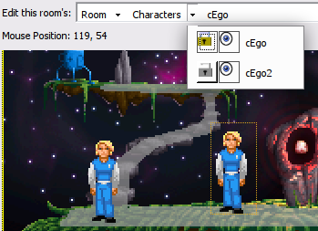
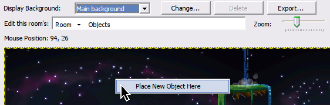

Room Editor
The Room Editor is where you can define the various properties and data that make up a room. This includes:
- Objects
- Hotspots
- Walkable areas
- Walkbehinds
- Regions
- ...and more!
NOTE: Currently only one room can be open for editing at a time

Controls
Pan
If your room is large enough that scrollbars are shown and required to move around in the room, you can also pan by either holding spacebar and left-click dragging the room background, or alternatively holding your mouse middle click button.
Zoom
In the upper top of the room bar there is a zoom slider than can be used to adjust the zoom, but alternatively holding ctrl and using the mouse scrollwheel (or scroll gesture in some touchpads) will also adjust zoom.
Context Menu
Right clicking should bring the context menu. There is a special case for area editing modes (Hotspots, Walkable areas, and alike) in which right click works as a "eraser"; in these modes context menu is called by a Shift + RMB combination. The context menu will usually contain the "Copy mouse coordinates to clipboard" command, but it can contain additional options depending on active layer or what is right clicked - like a character or an object.
Background
By selecting a background on the Display Background combo box, you can select which background of a room to display: Main Background, frame 2, 3, 4, 5. With one background selected, click Change... button to replace the background image with a new image. If a room has more than one background, by default, they are animated. To prevent that assign "BackgroundAnimtionEnabled" to "False" in the room properties. Also, you may lock background to a particular frame in script using SetBackgroundFrame command.
NOTE: If the background images are replaced with ones of a different size this will clear all of the mask (hotspot, walkbehind, region, and walkable) areas which have been are defined so far.
Edit this room's control
This control allows you to view characters, objects, and edges, simultaneously along with one of the room masks: hotspots, walkable areas, walk-behinds or regions. Moving a character or object already in the room is done by clicking and dragging it.

You can select any element in the room by navigating on the bar using the down arrows, which will reveal the available elements of the chosen category.
Characters and objects can also be selected directly in the room, by clicking on them, as long as the corresponding layer is active.
To select any mask-type layer, first select the layer you are interested and then use the Select area tool (picker icon on toolbar) to pick the specific element.
Placing a new object
If you want to place a new object, you can do so by selecting Objects in the layer menu and right clicking on the screen where you would like to create it. A new context menu should open and you can choose the option "Place New Object Here".

Placing a character
Characters will only be shown if this room is their 'starting room'. You can modify this by expanding the "Characters" node in the Explore Project tree, and configuring the property StartingRoom for a particular character.
Layer and element Visibility (eye icon)
Each layer can be made visible/hidden by toggling its visibility button on and off. In addition, for the object, character, and edge layers, each element in the layer can also be made be hidden in the same way.
NOTE: This will only affect the editor, not the actual game
Layer and element Locking (padlock icon)
Each layer can be locked/unlocked by by toggling its locking button. In addition, for each layer, each element in the layer can also be locked/unlocked in a similar way. A locked element cannot be moved until it is unlocked, this is useful to prevent accidentally moving something when designing the room.
NOTE: This will only affect the editor, not the actual game
Properties control
The properties control will adapt to whichever element is selected on the current layer. If no element is selected or the edges layer is selected, this control will show the current Room properties and events.
The list button switches the control to show Properties and the button with a lighting bolt on it switches the control to show Events. Both can be navigated either in categorical order or alphabetical order.
Positional changes on the properties of an element (e.g. its x or y position) will instantly be updated in the room area, which is useful for pixel positioning.
Room Properties
- Description - this is an optional room description, which may also serve as a room's name.
- Number - room's number is its ID. Changing this property will renumber the room and rename its files.
- BackgroundAnimationDelay - the delay between room background frames switch, in game ticks. This value only has a meaning when room has multiple backgrounds, and BackgroundAnimationEnabled is turned on.
- BackgroundAnimationEnabled - whether the background frames will switch automatically over time. This value only has a meaning when room has multiple backgrounds.
- MaskResolution - defines the ratio of masks (walkable, hotspot and region) vs room background size. Default is 1:1, but few other choice are available, like 1:2, 1:3 and 1:4. The higher the last number is, the less precise the mask is. This setting exists mostly for the backwards compatibility, or for exotic scenarios where you may want to have hotspot or walkable area to have lower resolution than the room itself. Note that walk-behind mask is not affected by this, and always has 1:1 ratio with the room background.
- PlayerCharacterView - when set to a non-zero value, the player character will be changed to this View when the room is loaded. Note that you may also use script command "ChangeView" for the same purpose.
- Properties - lets you configure room's Custom Properties. Please see respective topic for more information on this subject.
- ShowPlayerCharacter - if set to FALSE, then the player character will be disabled (turned invisible and immobile) when the room is loaded. Also the standard "WalkTo" cursor mode will be disabled. Note that you may achieve similar effect using property "Character.on" and function "Mouse.DisableMode" in script.
Room Events
- Enters room before fade-in - (
RoomLoad) triggers when the player enters the room, before the fade-in animation has played. - Enters room after fade-in - (
RoomAfterFadeIn) triggers when the player enters the room, after the fade-in animation has played. - First time enters room - (
RoomFirstLoad) triggers when the player enters the room for the first time, after the fade-in. - Leaves room before fade-out - (
RoomLeave) triggers when the player is leaving the room (likely because aChangeRoom), before the fade-out animation has played. - Leaves room after fade-ou - (
RoomUnload) triggers after the fade-out animation has played, before leaving the room. - Repeatedly execute - (
RoomRepExec) triggers once per frame, after all the script modulesrepeatedly_executehappens but before therepeatedly_execute_alwayshappens in the same frame. - Walks off left edge - (
RoomLeaveLeft) triggers when player goes left of the left edge. - Walks off right edge - (
RoomLeaveRight) triggers when player goes right of the right edge. - Walks off bottom edge - (
RoomLeaveBottom) triggers when player goes down of the bottom edge. - Walks off top edge - (
RoomLeaveTop) triggers when player goes up of the top edge.
Edges
Edges are moved by clicking and dragging them, once their layer is selected. If you have trouble locating them, the properties which correspond to each edge's position are:
TopEdgeYBottomEdgeYLeftEdgeXRightEdgeX
Objects
As described above, right clicking on the room when the Object layer is active allows you to create a new object. Objects can be freely positioned in the room, and whilst an object is selected you can edit its properties within the Properties control. While dragging an Object its x and y position will be shown on screen. The anchor point for positioning is the object's bottom left corner.
Characters
As described above, a character will only be available to show in a room if the character is configured to start in this room. Whilst dragging a Character its x and y position will be shown on screen. The anchor point for positioning is at the bottom-middle point of the character - the position should roughly match the middle of the characters feet.
Room masks (Hotspot, Walkable areas, Walk-behinds and Regions)
AGS offers a simple drawing editor when one of these layers is selected, so that you can directly edit these mask areas. The tools offered include a picker, a line tool, a freehand tool, a rectangle tool, and an area fill tool.
Also available is a way to import and export all mask areas as a bitmap image. These options are offered in-case you prefer to draw these areas in your preferred external image editor.
NOTE: Mask images must be using a 16-color (4-bit) or 256-color (8-bit) indexed color palette, where color 0 signifies transparency and colors 1-15 are used as the respective hotspot/walk-behind/walkable area numbers
See also: Room, Global functions (room actions)